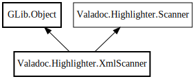

XmlScanner
Object Hierarchy:

Description:
public class XmlScanner :
Object,
Scanner
A cheap scanner used to highlight XML.
Content:
Static methods:
Creation methods:
Methods:
Fields:
Inherited Members:
All known members inherited from class GLib.Object
All known members inherited from interface Valadoc.Highlighter.Scanner